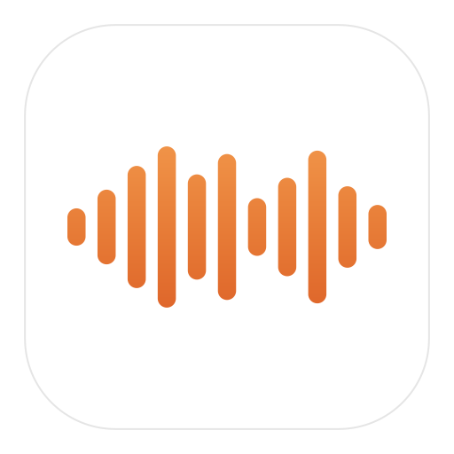
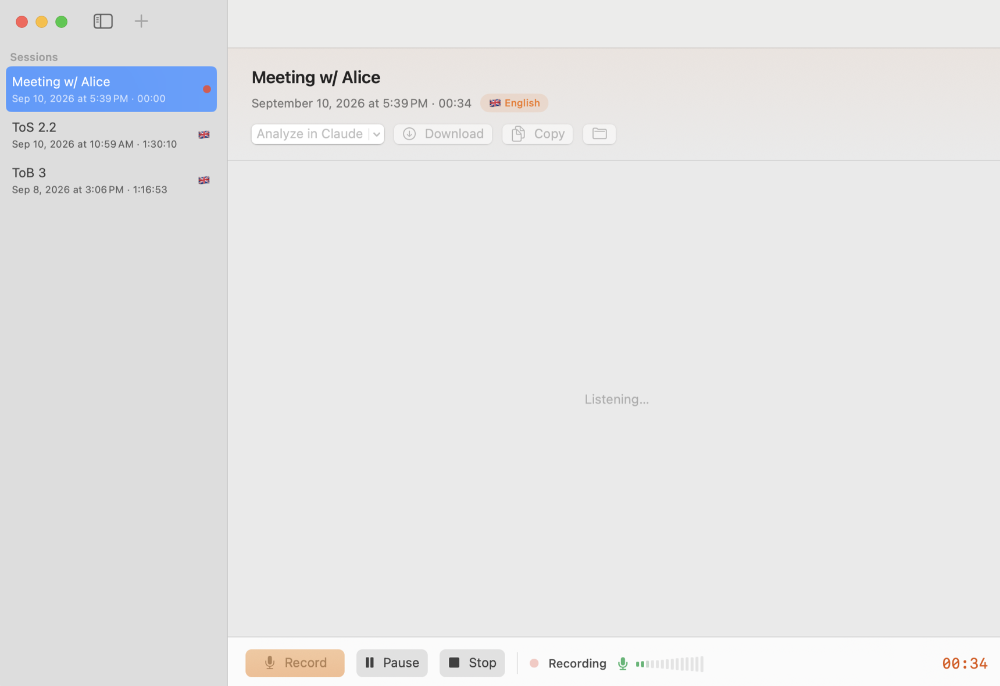

Pyno
Live speech-to-text on your Mac. Fully local, free, no account.
Built for lecture halls. Start it when the lecturer starts, stop it at the end, walk out with the hour already written up.

Nothing leaves the Mac
Transcription runs on the Neural Engine. It works the same with the Wi-Fi off.
Made for long sessions
Two and three hour recordings, written to disk as they go.
Plain Markdown out
One file per session in your Documents folder. No database, no lock-in.
25 European languages
NVIDIA Parakeet TDT v3 through Core ML, in English or French.